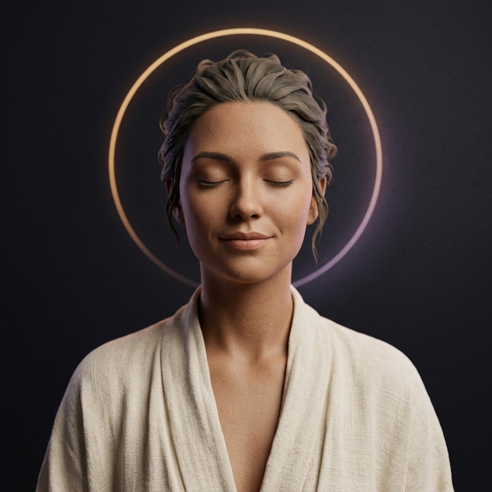

Женский профиль

Муза Тишины
Дефолтный аватар для женского профиля при регистрации до добавления натальных данных или фото.
Разрешения: 1024, 600, 128
Формат: WebP / PNG
Мужской профиль
Проводник Ясности
Дефолтный аватар для мужского профиля при регистрации до добавления натальных данных или фото.
Разрешения: 1024, 600, 128
Формат: WebP / PNG